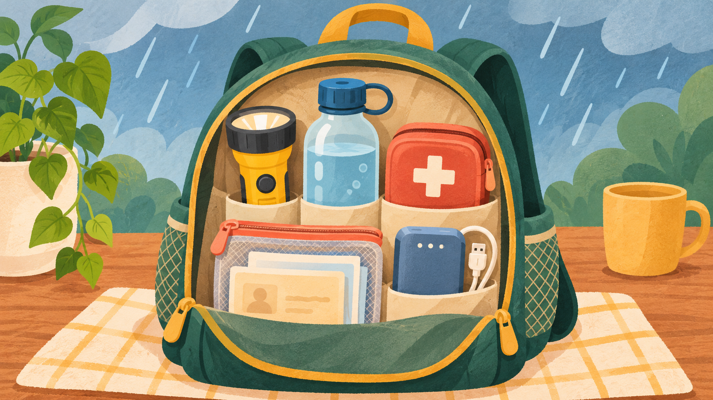

ANTES DE LA LLUVIA
Prepare su hogar
Revise coladeras, techos y cables expuestos. Guarde documentos importantes en una bolsa impermeable y acuerde cómo comunicarse con su familia.
CONSEJOS PRÁCTICOS
Consulte recomendaciones claras para prepararse, mantenerse a salvo y revisar su entorno después de la lluvia.
Explore las recomendaciones
Prepararse ayuda ✳ ✳PARA LLEVAR CONSIGO
Tres momentos clave, con acciones que puede recordar y compartir.
RECOMENDACIONES ESENCIALES
Revise los pasos principales y tenga presente qué situaciones debe evitar.
Revise coladeras, techos y cables expuestos. Guarde documentos importantes en una bolsa impermeable y acuerde cómo comunicarse con su familia.
Permanezca en un lugar seguro. No cruce arroyos ni calles inundadas, aunque el agua parezca poco profunda.
Reduzca la velocidad y busque una ruta o zona segura. Si el agua cubre el camino, deténgase en un sitio seguro y siga indicaciones oficiales.
Evite zonas dañadas y no toque cables caídos. Reporte riesgos a las autoridades correspondientes y manténgase al tanto de avisos oficiales.